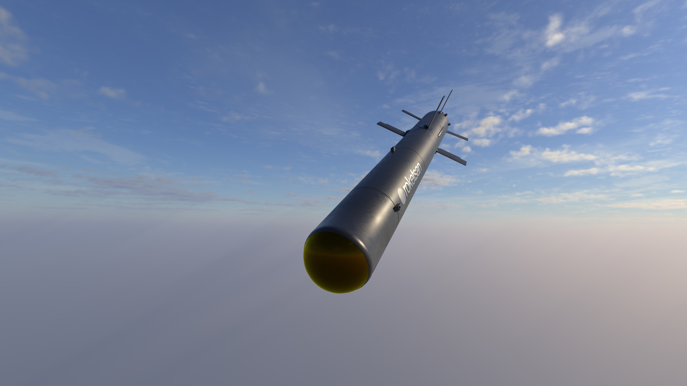
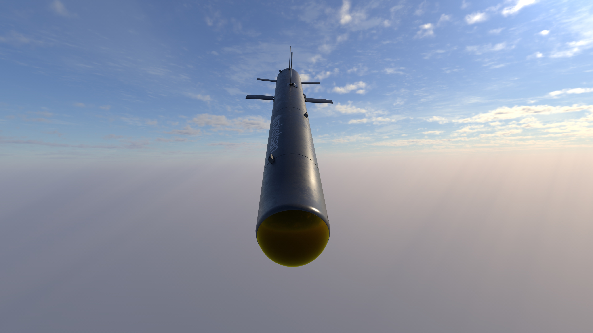
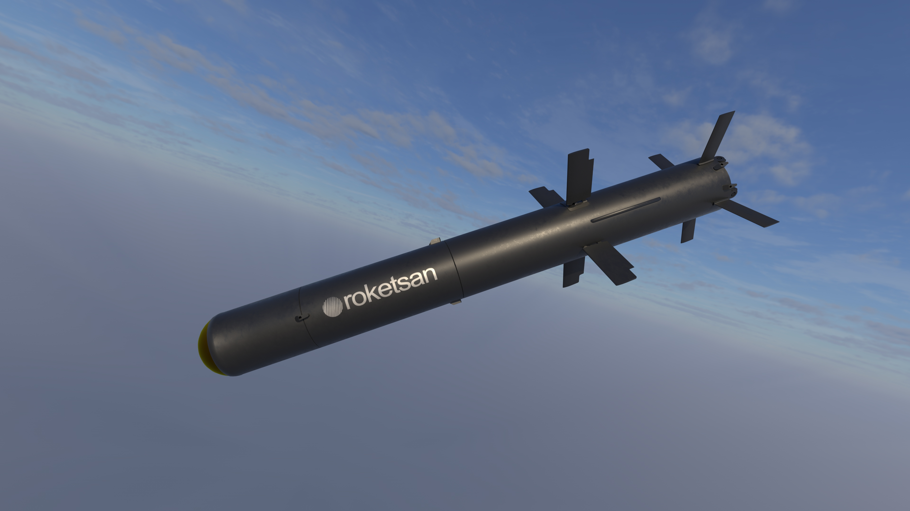

Kısa Menzilli Tanksavar Silahı
KARAOK, kısa menzilde zırhlı hedeflere karşı kullanılmak üzere geliştirilen, omuzdan atılan portatif tanksavar füze sistemidir. Hafif ve taşınabilir yapısı sayesinde piyade birliklerine bağımsız zırh imha kabiliyeti kazandırmak amacıyla tasarlanmıştır.
Sistem, üzerindeki görüntüleyici kızılötesi arayıcı başlık sayesinde gece ve gündüz görev yapabilir. Bu özellik, klasik optik nişangâhlı veya daha sınırlı güdüm altyapısına sahip kısa menzilli tanksavar sistemlerine göre önemli bir avantaj sağlar.
KARAOK’un omuzdan atım konsepti, onu özellikle piyade, komando ve hafif mobil unsurlar için kullanışlı hale getirir. Tanklar, zırhlı araçlar, muharebe araçları ve beton koruganlar gibi hedeflere karşı kısa reaksiyon süresiyle kullanılabilecek bir çözüm sunar.
Tandem anti-tank harp başlığı sayesinde reaktif zırhlı hedeflere karşı daha etkili bir vurucu etki oluşturur. Bu da sistemi sadece hafif araçlara karşı değil, daha sert hedef sınıflarına karşı da anlamlı hale getirir.
2.5 km
1.17 m
125 mm
25 kg
IIR
Tandem Anti-Tank
| Sistem Tipi | Kısa menzilli tanksavar silahı |
| Adı | KARAOK |
| Üretici | ROKETSAN |
| Görev Alanı | Kısa menzilde zırhlı ve korunaklı hedeflere piyade seviyesinde hassas angajman |
| Menzil | 2.5 km |
| Uzunluk | 1.17 m |
| Çap | 125 mm |
| Ağırlık | 25 kg |
| Güdüm | Imaging Infra-Red (IIR) / görüntüleyici kızılötesi arayıcı başlık |
| Harp Başlığı | Tandem anti-tank |
| Atış Platformu | Omuzdan atım |
| Hedef Türleri | Sabit ve hareketli hedefler, tanklar, zırhlı araçlar, muharebe araçları, beton koruganlar |
| Kullanım Yapısı | Portatif, tek er veya küçük tim seviyesinde taşınabilir tanksavar kullanım konsepti |
| Öne Çıkan Özellik | IIR arayıcı başlık ve omuzdan atım yapısını birleştiren yerli kısa menzilli tanksavar çözümü |
| Gece / Gündüz Kullanım | Görüntüleyici kızılötesi başlık sayesinde 24 saat kullanım |
| Portatif Kullanım | Omuzdan atım yapısıyla piyade birliklerinde bağımsız kullanım |
| Yakın Menzilli Zırh İmhası | 2.5 km sınıfında zırhlı hedeflere karşı hızlı reaksiyon |
| Hareketli Hedef Angajmanı | Hareketli kara hedeflerine karşı etkin kullanım |
| Sabit Hedef Angajmanı | Korugan ve sabit mevziler gibi hedeflere karşı etkin kullanım |
| Reaktif Zırha Karşı Etki | Tandem başlık sayesinde modern zırhlara karşı daha yüksek etkinlik |
| Piyade Esnekliği | Ağır araç desteği gerektirmeden tanksavar kabiliyeti sunması |
| Tanklar | Ana muharebe tankı sınıfındaki hedefler |
| Zırhlı Araçlar | Zırhlı muharebe ve destek araçları |
| Muharebe Araçları | Çeşitli kara muharebe unsurları |
| Sabit Hedefler | Sabit mevziler ve işaretlenmiş kara hedefleri |
| Hareketli Hedefler | İlerleyen veya manevra yapan kara hedefleri |
| Beton Koruganlar | Korugan ve benzeri tahkimli yapılar |
| Kullanıcı Sınıfı | Piyade ve hafif kara unsurları |
| Atış Yapısı | Omuzdan atım |
| Taktik Rol | Kısa menzilde taşınabilir tanksavar ve tahkimat imha çözümü |
| Aile İçindeki Yeri | UMTAS / OMTAS ailesine göre daha hafif, daha kısa menzilli ve piyade odaklı tanksavar sistem |
| Avantajı | Araç gerektirmeden bireysel/tim düzeyinde zırhlı hedeflere karşı vurucu güç sağlaması |


